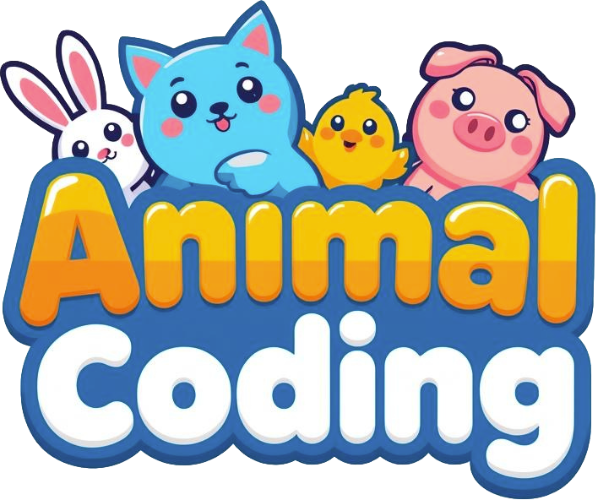
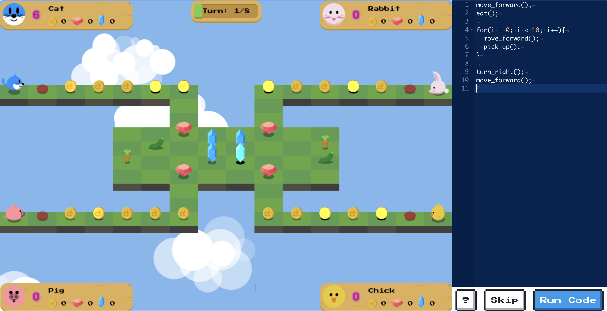

A turn-based multiplayer game where up to four players control their animals with code to collect coins and gems.
Play the GameBest played on a laptop or desktop computer with a keyboard.
The game is not designed for phones or tablets.
Watch the Introduction
How to Play
Players take turns. On your turn, roll the dice to get action points, then write code to move your animal and pick up items. Collect as many coins and gems as you can. The stage ends when all coins and gems are collected or every player reaches the turn limit, and the player with the highest score wins.
Getting Started
- On the title screen, click Config.
- Enter the player names. For fewer than four players, leave the extra name fields blank.
- Choose a Code Editor: Text to type code, or Blocks (beta) to drag and drop blocks.
- Click OK, then click Start.
Keyboard Shortcuts
| Key | Action |
|---|---|
| Space | Roll the dice |
| Ctrl-Space | Insert code (Text editor) |
| Ctrl-R | Run code |
| Ctrl-S | Skip a turn |
| Escape | Stop running code |
| F1 | Show game options |
Stages and Play Time
Each stage begins with a short introduction video. Plan for 60-70 minutes to play all four stages.
| Stage | Topic | Commands Introduced | Play Time |
|---|---|---|---|
| 1 | Commands (sequence) | move_forward(), turn_left(), turn_right(), pick_up() | 10-15 minutes |
| 2 | Loops (iteration) | eat(), for loops | 10-15 minutes |
| 3 | Conditional Statements (selection) | if (path_ahead), if (path_to_the_left), if (path_to_the_right) | 10-15 minutes |
| 4 | Functions | steal(), function | 30+ minutes |
Technical Requirements
- Browser: tested with Mozilla Firefox, Google Chrome, and Safari.
- Device: a laptop or desktop computer with a keyboard. The game does not work well on iPads.
For Educators
Classroom Setup
Form groups of 2-4 students. Each group shares one PC or laptop and plays together, with each student controlling one of the animals with code.
Who Is This For?
The game introduces text-based programming to secondary and higher education students. It works well:
- For fun events such as Computer Science Education Week.
- As a first experience with text-based programming for students who have already used block-based programming.
- To reinforce what students have learned in a block-based programming environment.
For younger students, the Computer Science Teachers Association (CSTA) Standards recommend block-based programming (e.g., Code.org or Scratch) to introduce basic programming concepts first. The game's Blocks editor shows the same code as drag-and-drop blocks, which can help students move from blocks to text.
Note: The Blocks editor is still in beta. The stage introduction videos currently teach text-based programming, so students using Blocks may need extra guidance from the teacher.
Research
This game was developed as part of dissertation research. A link to the associated academic publication will be provided once it is available.